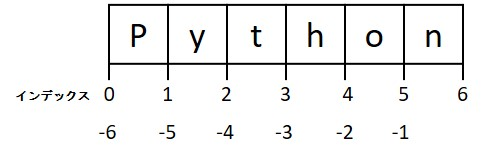

Python 入門#
本章では、プログラミング言語 Python の基礎的な文法を学んでいきます。 次章以降に登場するコードを理解するにあたって必要となる最低限の知識について、最短で習得するのが目標です。 より正確かつ詳細な知識を確認したい場合には、公式のチュートリアルなどを参照してください。
Pythonにはバージョンとして 2 系と 3 系の 2 つの系統があり、互換性のない部分もあります。 本チュートリアルでは、3 系である Python 3.6 以上を前提とした解説を行っています。
Python の特徴#
プログラミング言語には、Python 以外にも C 言語や Java、Ruby、R のように様々なものがあります。それぞれの言語がすべての用途に適しているわけではなく、しばしば用途によって得手不得手があります。
本チュートリアルでは基本的に Python というプログラミング言語を扱います。 その理由は、Python はデータ解析・機械学習のためのライブラリが充実しており、データ解析や機械学習の分野で最もよく使われている言語だからです。 また、Web アプリケーションフレームワークの開発も活発で、データ解析だけでなく Web サービス開発まで同じ言語で統一して行える点も魅力です。
さらには、初学者にとっても学びやすい言語です。 初学者がプログラミングを学び始めるときにつまづきがちな難しい概念が他の言語と比べ多くなく、入門しやすい言語といえます。
まとめると、Python には
データ解析や機械学習によく使われている
Web アプリケーションの開発などでもよく使われている
初学者がはじめやすい言語
のような魅力があります。
文法とアルゴリズム#
プログラミングによってある特定の処理をコンピュータで自動化したい場合、文法とアルゴリズムの 2 つを理解しておく必要があります。
プログラムでは、まずはじめにコンピュータに命令を伝えるためのルールとなる文法を覚える必要があります。 文法を無視した記述があるプログラムは、実行した際にエラーとなり処理が停止します。そのため、文法はしっかりと理解しておく必要があります。
ただし、文法さえ理解していれば十分かというとそうではありません。一般的に、初学者向けのプログラミングの参考書では、この文法だけを取り扱うことも多いのですが、コンピュータに処理を自動化させることが目的であれば、文法だけでなくアルゴリズムも理解する必要があります。アルゴリズムとは、どういう順番でどのような処理をしていくかの一連の手順をまとめたものです。
この章では、Python の文法について紹介し、機械学習やディープラーニングで必要となるアルゴリズムについてはこれ以降の章で紹介します。
ここでは以下 4 つの文法に主眼を置きながら説明していきます。
変数
制御構文
関数
クラス
変数#
変数 (variable) とは、様々な値を格納することができる、名前がついた入れ物です。 この変数に値を格納したり、更新したりすることで、計算結果を一時的に保持しておくことができます。
代入と値の確認#
それでは、a という名前の変数に、1 を代入してみましょう。
a = 1
代入は = の記号を用います。
数学的には = は等しいという意味を持ちますが、Python では 「左辺の変数に、右辺の値を代入する」 という意味になります。
Jupyter Notebook 上では、変数名だけ、もしくは変数名を最後の行に記述したセルを実行すると、値を確認することができます。
a
1
このように、変数に格納されている値を確認することができました。
また、値を確認するための他の方法として、print() と呼ばれる関数 (function) を使用することもできます。
関数について詳しくは後述しますが、print() のように Python には予め多くの関数が定義されています。 そのような関数を組み込み関数 (built-in function) といいます。
print(a)
1
変数につける名前は、コードを書く人が自由に決めることができます。
ただし、わかりやすい名前をつけることがとても大切です。
例えば、人の名前を格納するための変数が a という変数名だと、それがどのような使われ方をするのかを容易に類推することができません。
name という名前であれば、ひと目で見て何のための変数かが分かるようになります。
これは、自分のコードを読む他人や、未来の自分にとってコードを理解するための大きな手がかりとなります。
コメント#
Python では、# の後からその行の終わりまでに存在する全ての文字列は無視されます。
この # の後ろに続く部分を コメント (comment) と呼び、すでに書かれたコードをコメントにすることを コメントアウト (comment out) と言います。
コメントは、コード中に変数の意味や処理の意味をコードを読む人に伝えるためによく使われます。
Jupyter Notebook のコードセルに書かれたコードを行ごとコメントアウトしたい場合は、その行を選択した状態で Ctrl + / を入力することで自動的に行の先頭に # 記号を挿入することができます。複数行を選択していれば、選択された複数の行が同時にコメントアウトされます。また、コメントアウトされている行を選択した状態で同じキー入力を送ると、コメントアウトが解除されます。
下のセルを実行してみましょう。
# この行及び下の行はコメントアウトされているため実行時に無視されます
# print(a)
print(a) が書かれているにも関わらず、何も表示されませんでした。
これは、print(a) 関数が書かれた行がコメントアウトされていたためです。
変数の型#
プログラミングで扱う値には種類があります。 Python では、整数 (integer)、実数 (real number)、文字列 (string) などが代表的な値の種類です。 それぞれの種類によって、コンピュータ内での取扱い方が異なり、この種類のことは一般に型 (type) と呼びます。
例えば、整数、実数、そして文字列をそれぞれ別々の変数に代入するコードは以下のとおりです。
a = 1
b = 1.2
c = 'Chainer'
プログラムは型によって変数の取り扱いが異なるため、型の違いがエラーの原因になることがあります。そのため、簡単に型の特徴は把握しておく必要があります。
まずは、上記の a, b, c の型を確認する方法を紹介します。
型の確認は type() という組み込み関数を使用します。
type(a)
int
type(b)
float
type(c)
str
a は int という整数の型をもつ変数であり、b は float という実数の型をもつ変数です。
この float という型の名前は、コンピュータ内で実数を扱うときの形式である浮動小数点数 (floating-point number) に由来しています。
c は str という文字列の型をもつ変数であり、値を定義するにはシングルクォーテーション ' ' もしくはダブルクォーテーション " " で対象の文字列をくくる必要があります。
Python では、. を含まない連続した数字を int、直前・直後も含め . が含まれる連続した数字を float だと自動的に解釈します。
例えば、7 や 365 は int ですが、2.718、.25、10. などは float になります。
例えば、実数の 5 は以下のように書くことができます。
type(5.0)
float
type(5.)
float
一方、.5 と書くと、これは 0.5 の略記と解釈されることに注意してください。
type(.5)
float
print(.5)
0.5
算術演算子#
様々な計算を意味する演算子と呼ばれる記号があります。 はじめに紹介するのは算術演算子 (arithmetic operator) と呼ばれるもので、 2 つの変数または値を取り、 1 つの演算結果を返します。
代表的な演算として**四則演算（加算・減算・乗算・除算）**があります。 四則演算に対応する演算子として、Python では以下の記号が用いられます。
演算 |
記号 |
|---|---|
加算（足し算） |
|
減算（引き算） |
|
乗算（掛け算） |
|
除算（割り算） |
|
具体例を見ながら使い方を説明します。
# 整数と整数で加算 -> 結果は整数
1+1
2
このように、演算子を使う際には、記号の両側に値を書きます。 このとき、演算子の両側にひとつずつ空白を空けることが多いです。 文法的な意味はありませんが、コードが読みやすくなります。 この空白は Python のコーディング規約である PEP8 でも推奨されています。
1 + 1
2
値が代入されている変数との演算も下記のように行うことができます。
a + 2
3
また、int と float は異なる型同士ですが、計算を行うことができます。
int と float の演算結果の型は float になります。
# 整数と実数で加算 -> 結果は実数
a + b
2.2
他の演算子の例を示します。
# 整数と整数で減算 -> 結果は整数
2 - 1
1
# 実数と整数で減算 -> 結果は実数
3.5 - 2
1.5
# 整数と整数で乗算 -> 結果は整数
3 * 5
15
# 実数と整数で乗算 -> 結果は実数
2.5 * 2
5.0
# 整数と整数で除算 -> 結果は実数
3 / 2
1.5
# 整数と整数で除算 -> 結果は実数
4 / 2
2.0
Python 3 では、 / 記号を用いて除算を行う場合、除数（割る数）と被除数（割られる数）が整数であっても、計算結果として実数が返ります。
計算結果として実数を返す除算のことを特に、真の除算 (true division) と言います。
一方、商（整数部分）を返すような除算演算子として、 // 記号が用意されています。 / 記号を 2 回、間を空けずに繰り返します。計算結果として商を返す除算のことを、 切り捨て除算 (floor division) と呼びます。
商を計算したい場合に便利な演算子であるため、こちらも覚えておきましょう。
# 整数と整数で切り捨て除算 -> 結果は整数
3 // 2
1
# 整数と整数で切り捨て除算 -> 結果は整数
4 // 2
2
また、ここで注意すべき点として、整数や実数と文字列の演算は基本的にエラーになります。
# error
a + c
---------------------------------------------------------------------------
TypeError Traceback (most recent call last)
Cell In[27], line 2
1 # error
----> 2 a + c
TypeError: unsupported operand type(s) for +: 'int' and 'str'
エラーメッセージを読みましょう。
TypeError: unsupported operand type(s) for +: ‘int’ and ‘str’
と言われています。「+ にとって int と str はサポートされていない被作用子（+ が作用する対象のこと。operand）です」と書かれています。「int に str を足す」ということはできないというわけです。
このようにエラーメッセージからは自分のミスに関する情報を得ることができます。 何を間違えたかはエラーをもとに調べれば大抵わかりますから、まずはエラーについて調べることを心がけましょう。
int もしくは float と、 str の間の加算、減算、除算では上記のエラーが生じます。
ただし、str と int の乗算は特別にサポートされており、計算を実行することができます。
# str と int で乗算
c * 3
上のコードは、c という文字列を 3 回繰り返す、という意味になります。
str 同士は足し算を行うことができます。
name1 = 'Chainer'
name2 = 'チュートリアル'
name1 + name2
整数と文字列を連結したいこともあります。
例えば、1 という整数に、 '番目' という文字列を足して '1番目' という文字列を作りたいような場合です。
その場合には、型を変換するキャスト (cast) という操作をする必要があります。
何かを int にキャストしたい場合は int() という組み込み関数を使い、str にキャストしたい場合は str() という組み込み関数を使います。では、1 という整数を str にキャストして、 '番目' という文字列と足し算を行ってみましょう。
1
type(1)
str(1)
type(str(1))
str(1) + '番目'
演算子の話から少しそれますが、フォーマット文字列を使用すると + を使用せずに、自然な文字列の中に変数の値を埋め込むことができます。
フォーマット文字列の書き方はいくつかありますが、簡単な例を 2 つ紹介します。
文字列を通常のクォーテーション ("", '') の代わりに、f がついた f"" または f'' で囲みます。
すると、変数を波括弧で囲んで文字列に挿入すると、その部分に変数の値が埋め込まれます。
d = 1
f'{d}番目'
文字列に空の波括弧 {} を挿入して、文字列の後ろに .format() を続けて書くと、format 関数に渡された変数の値が {} の部分に埋め込まれます。
d = 1
'{}番目'.format(d)
演算子に話を戻します。+= や -= もよく使われる演算子です。
これは、演算と代入を合わせて行うもので、累積代入文 (augmented assignment statement) と呼ばれます。
下記に示すとおり、+= では左辺の変数に対して右辺の値を足した結果で、左辺の変数を更新します。
# 累積代入文を使わない場合
count = 0
count = count + 1
count
# 累積代入文を使う場合
count = 0
count += 1
count
四則演算の全てで累積代入文を利用することができます。
つまり、+=, -=, *=, /= がそれぞれ利用可能です。
Python には、他にも幾つかの算術演算子が用意されています。 例えば以下の演算子です。
演算 |
記号 |
|---|---|
累乗 |
|
剰余 |
|
** を使うと、\(2^3\) は以下のように記述することができます。
# 累乗
2 ** 3
% を使って、9 を 2 で割った余りを計算してみましょう。
# 剰余
9 % 2
比較演算子#
比較演算子は、2 つの値の比較を行うための演算子です。
演算 |
記号 |
|---|---|
小なり |
|
大なり |
|
以下 |
|
以上 |
|
等しい |
|
等しくない |
|
比較演算子は、その両側に与えられた値が決められた条件を満たしているかどうか計算し、満たしている場合は True を、満たしていない場合は False を返します。
True や False は、ブール (bool) 型と呼ばれる型を持った値です。
ブール型の値は True もしくは False の 2 つしか存在しません。
いくつかの比較演算子の計算例を示します。
1 < 2
# 型の確認
type(1 < 2)
2 == 5
1 != 2
3 >= 3
'test' == 'test'
等しいかどうかを判定する比較演算子 == を使う際は、代入演算子 = と間違えないように気をつけてください。
複合データ型#
これまでは a = 1 のように 1 つの変数に 1 つの値を代入する場合を扱ってきましたが、複数の値をまとめて取り扱いたい場面もあります。
Python では複数の変数や値をまとめて扱うのに便利な、以下の 3 つの複合データ型があります。
リスト (list)
タプル (tuple)
辞書 (dictionary)
リスト#
複数の変数を , （カンマ）区切りで並べ、それらの全体を [ ] で囲んだものを リスト (list) と言います。
リストに含まれる値を要素と呼び、整数のインデックス （要素番号）を使ってアクセスします。
# リスト型の変数を定義
numbers = [4, 5, 6, 7]
# 値の確認
print(numbers)
# 型の確認
type(numbers)
numbers には 4 つの数値が入っており、要素数 は 4 です。
リストの要素数は、リストの長さ (length) とも呼ばれ、組み込み関数の len() を用いて取得することができます。
len() はよく使う関数であるため、覚えておきましょう。
# 要素数の確認
len(numbers)
リストの各要素へアクセスする方法はいくつかあります。
最も簡単な方法は [] を使ってアクセスしたい要素番号を指定して、リストから値を取り出したり、その位置の値を書き換えたりする方法です。
ここで、注意が必要な点として、Python では先頭の要素のインデックス番号が 0 である点があります。
インデックス番号 1 は 2 番目の要素を指します。
# 先頭の要素にアクセス
numbers[0]
# 先頭から3番目の要素にアクセス
numbers[2]
# 2 番目の要素を書き換え
numbers[1] = 10
# 値の確認
numbers
また、インデックスに負の値を指定すると、末尾からの位置となります。
要素番号 -1 で最後の要素を参照することができます。
# 末尾の要素にアクセス
numbers[-1]
# 末尾から3番目の要素にアクセス
numbers[-3]
次に、リストから一度に複数の要素を取り出す操作であるスライス (slice) を紹介します。
開始位置:終了位置 のようにコロン : を用いてインデックスを範囲指定し、複数の部分要素にアクセスします。
このスライスの処理は、この後の章でも多用するため、慣れておきましょう。
例えば、先頭から 2 つの要素を取り出したい場合、以下のように指定します。
numbers[0:2]
開始位置:終了位置 と指定することで、開始位置から終了位置のひとつ手前までの要素を抽出します。
終了位置に指定したインデックスの値は含まれないことに注意してください。
また、指定する開始番号が 0 である場合、以下のような略記がよく用いられます。
numbers[:2]
このように、先頭のインデックスは省略することができます。 このような記法を使う場合は、終了位置を示す数字を取り出したい要素の個数と捉えて、先頭から 2 つを取り出す操作だと考えると分かりやすくなります。
同様に、ある位置からリストの末尾までを取り出す場合も、終了位置のインデックスを省略することができます。 例えば、2 個目の要素から最後までを取り出すには以下のようにします。
numbers[1:]
この場合は、取り出される要素の個数は len(numbers) - 1 個となることに注意してください。
以上から、numbers[:2] と numbers[2:] は、ちょうど 2 個目の要素を境に numbers の要素を 2 分割した前半部分と後半部分になっています。
ここで、インデックスが 2 の要素自体は後半部に含まれるということに注意してください。
また、開始位置も終了位置も省略した場合は、すべての要素が選択されます。
一見ややこしい挙動のようですが、ここで下画像のようにインデックスは要素の間にふられているとすると理解しやすくなります。
例えば numbers[:2] は「2の位置”まで”」だから2個目の要素は含まないというわけです。

ちなみにこれはPythonの公式ドキュメントで紹介されている覚え方です。
全ての要素を選択する場合、下記のように書くこともできます。
numbers[:]
現状では、numbers[:] と numbers の結果が同じであるため、どのように使用するか疑問に思われるかも知れません。
しかし、後の章では NumPy というライブラリを用いてリストの中にリストが入ったような多次元配列 (multidimensional array) を扱っていきます。
そして多次元配列を用いて行列を表す場合には、0 列目のすべての値を抽出するために [:, 0] のような記法を用いるケースが登場します。
これは Python 標準の機能ではありませんが、Python 標準のスライス表記を拡張したものになっています。
リストは数値以外に、文字列を扱うこともでき、また複数の型を同一のリスト内に混在させることもできます。
# 文字列を格納したリスト
array = ['hello', 'world']
array
# 複数の型が混在したリスト
array = [1, 1.2, 'Chainer']
array
リストにリストを代入することもできます。 また、Python 標準のリストでは入れ子になったリスト内の要素数がばらばらでも問題ありません。
array = [[1, 1.2, 'Chainer', True], [3.2, 'Tutorial']]
array
リストを使う際に頻出する操作として、リストへの値の追加があります。
リスト型には append() というメソッドが定義されており、これを用いてリストの末尾に新しい値を追加することができます。
上記の array に値を追加してみましょう。
# 末尾に 2.5 を追加
array.append(2.5)
# 値の確認
array
また、今後頻出する処理として、空のリストを定義しておき、そこに後段の処理の中で適宜新たな要素を追加していくという使い方があります。
# 空のリストを定義
array = []
# 空のリストに要素を追加
array.append('Chainer')
array.append('チュートリアル')
array
タプル#
タプル (tuple) はリストと同様に複数の要素をまとめた型ですが、リストとは異なる点として、定義した後に中の要素を変更できないという性質を持ちます。
タプルの定義には ( )を用います。
# タプルを定義
array = (4, 5, 6, 7)
array
# 型の確認
type(array)
タプルの定義する際に ( ) を使用したため、要素へのアクセスも ( ) を使うように感じるかもしれませんが、実際にはリストと同様 [ ] を使用します。
# 先頭の要素へアクセス
array[0]
# リストと同様、スライスも使用可能
array[:3]
先述の通り、タプルは各要素の値を変更することができません。 この性質は、定数項などプログラムの途中で書き換わってしまうことが望ましくないものをまとめて扱うのに便利です。
実際に、タプルの要素に値の書き換えを行うとエラーが発生します。
# error
array[0] = 10
tuple のように中身が変更できない性質のことを**イミュータブル (immutable)であると言います。反対に、list のように中身が変更できる性質のことをミュータブル (mutable)**であると言います
辞書#
リストやタプルでは、複数の値をまとめて扱うことができました。 そこで、定期テストの結果をまとめることを考えてみましょう。
例えば、数学 90 点、理科 75 点、英語 80 点だったという結果を scores = [90, 75, 80] とリストで表してみます。
しかし、これでは何番目がどの教科の点数に対応するか、一見して分かりにくいと思われます。
Python の dict 型は、キー (key) とそれに対応する値 (value) をセットにして格納することができる型であり、このようなときに便利です。
リストやタプルでは、各要素にアクセスする際に整数のインデックスを用いていましたが、辞書ではキーでインデックス化されているため、整数や文字列など、色々なものを使って要素を指定することができます。
辞書は {} を用いて定義し、要素にアクセスする際には、リストやタプルと同様に [ ] を使用し、[ ] の中にキーを指定して対応する値を取り出します。
[ ] による要素へのアクセスは複数の要素を持つ型において一般的な記法なのがわかると思います。
要素のどれにアクセスするのかを、リストやタプルではインデックスで、辞書ではキーで指定するわけです。
# 辞書を定義
scores = {'Math': 90, 'Science': 75, 'English': 80 }
scores
# key が Math の value にアクセス
scores['Math']
# key に日本語を使用することも可能
scores = {'数学': 90, '理科': 75, '英語': 80}
scores
scores['数学']
他の人が定義した辞書に、どのようなキーが存在するのかを調べたいときがあります。 辞書には、そのような場合に使える便利なメソッドがいくつか存在します。
keys(): キーのリストを取得。dict_keysというリストと性質が似た型が返るvalues(): 値のリストを取得。dict_valuesというリストと性質が似た型が返るitems(): 各要素の(key, value)のタプルが並んだリストを取得。dict_itemsというリストと性質が似た型が返る
# キーのリスト
scores.keys()
# 値のリスト
scores.values()
# (キー, 値)というタプルを要素とするリスト
scores.items()
dict_keys, dict_values, dict_items と新しい型が登場しましたが、これは辞書型特有の型であり厳密には標準のリストとは異なりますが、リストと性質の似た型であるという程度の認識で問題ありません。
辞書に要素を追加する場合は、新しいキーを指定して値を代入します。
scores['国語'] = 85
scores
また、既に存在するキーを指定した場合には、値が上書きされます。
scores['数学'] = 95
scores